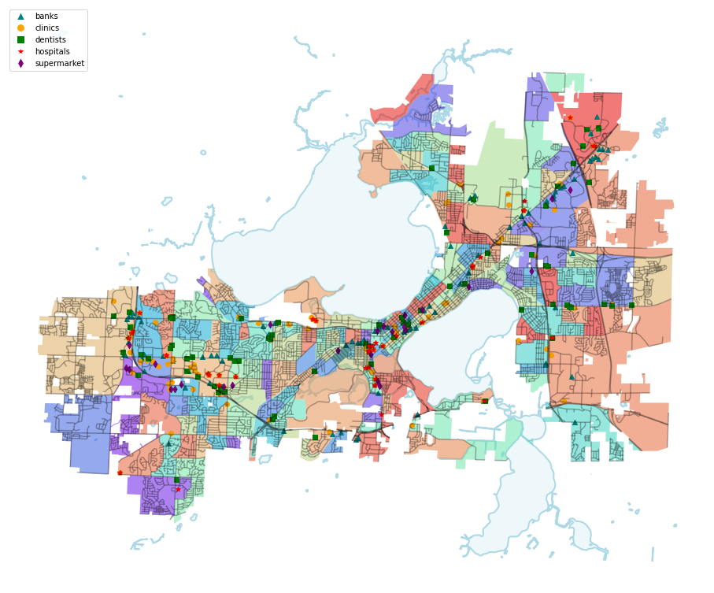
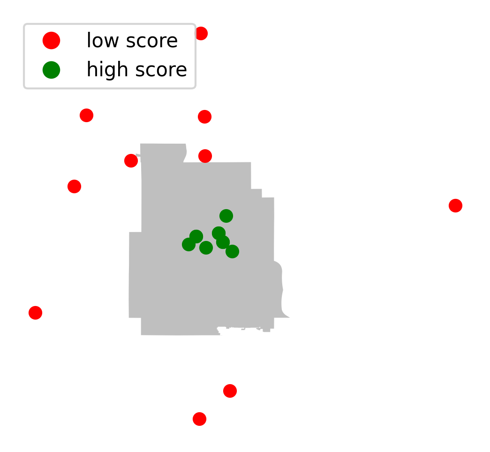
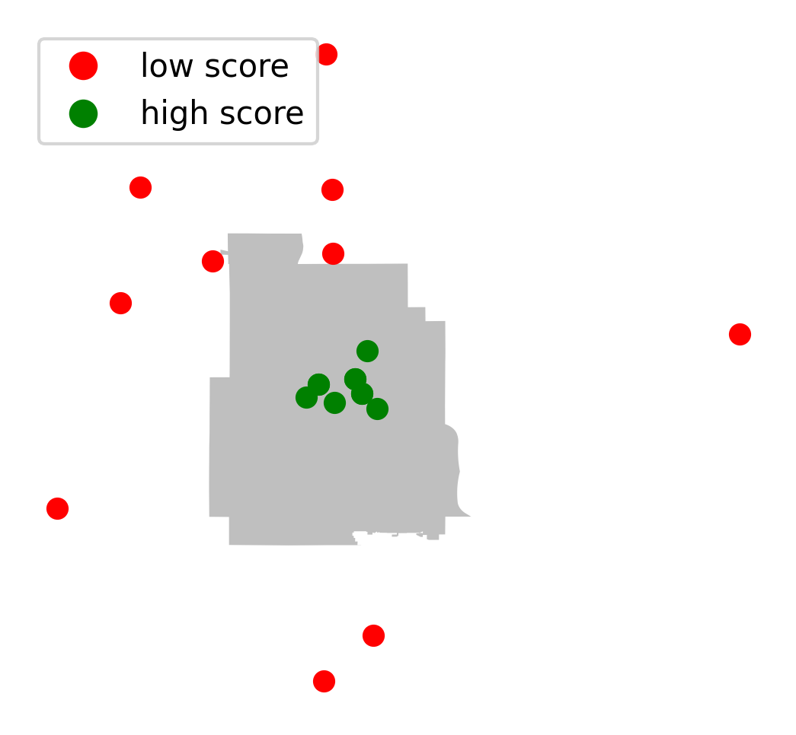

fix: font size better x, y label running for whole week of SCanalyzer
More on performance
show service plot color based on services score
Compare
pytest tester.py -v --disable-warnings in the same folder as testers.py should results:def get_score(area, banks=0, clinics=0, dentists=0, hospitals=0, supermarkets=0):
x6 = 1
if banks == 0:
x6 = x6/2
if supermarkets == 0:
x6 = x6/2
if hospitals == 0:
x6 = x6/2
if clinics == 0:
x6 = x6/2
if dentists == 0:
x6 = x6/2
score = (area + banks + clinics + hospitals + dentists + supermarkets) * x6
return score
| label | max coverage | min coverage | median coverage | |
|---|---|---|---|---|
| 0 | 503 Panther Trail | 2.27287 | 1.44068 | 1.44797 |
| 1 | 1557 Wyoming Way | 8.40589 | 8.40589 | 8.40589 |
| 2 | Whitman Lane Whitetail Ridge | 5.45128 | 5.3919 | 5.45128 |
| 3 | 2219 Myrtle Street | 5.55401 | 1.7133 | 5.55401 |
| 4 | 1908 Northwestern Avenue | 7.44066 | 3.74103 | 7.16769 |
| 5 | 7577 Kenyon Drive | 5.36531 | 0.042519 | 4.0406 |
| 6 | 1503 Almo Avenue | 2.50079 | 0.435309 | 2.50079 |

| label | max coverage | min coverage | median coverage | |
|---|---|---|---|---|
| 0 | Lot 138 North Frances Street | 57.9184 | 21.4564 | 45.1301 |
| 1 | Civil War Cannon North Randall Avenue | 42.8706 | 17.4803 | 40.8135 |
| 2 | 412 North Carroll Street | 39.1936 | 23.1133 | 32.0827 |
| 3 | Music Hall 925 | 47.14 | 17.7823 | 43.016 |
| 4 | Pay Station 50 North Fairchild Street | 44.3226 | 30.3078 | 37.9903 |
| 5 | 266 West Doty Street | 51.3447 | 18.8604 | 35.0567 |
| 6 | 135 North Hancock Street | 43.283 | 20.1093 | 36.8613 |

Above is the madison city routes
service graph: 


| label | max coverage | min coverage | |
|---|---|---|---|
| 0 | (38.746552975793826, -90.32366958934445) | 21.9341 | 0 |
| 1 | (38.73228422884455, -90.23796506296235) | 18.5819 | 0 |
| 2 | (38.67320549137285, -90.26337385384753) | 20.3912 | 0 |
| 3 | (38.62526994097163, -90.10676075888955) | 15.4586 | 0 |
| 4 | (38.553566414916084, -90.17747677561692) | 5.5337 | 0 |
| 5 | (38.74922605851386, -90.20346081153258) | 12.2374 | 0 |
| 6 | (38.699066460086975, -90.25582323640651) | 8.60969 | 0 |
| 7 | (38.71368054319952, -90.32688905199662) | 12.7927 | 0 |
| 8 | (38.61458240297301, -90.27222035993542) | 10.0945 | 0 |

| label | max coverage | min coverage | |
|---|---|---|---|
| 0 | (38.653449080130734, -90.30491590026699) | 41.4912 | 0 |
| 1 | (38.59105671485263, -90.27665443610043) | 37.6306 | 0 |
| 2 | (38.6397371209948, -90.33661872147931) | 15.7728 | 0 |
| 3 | (38.64673791210517, -90.30980061054092) | 24.3654 | 0 |
| 4 | (38.646968239007855, -90.33532779707863) | 21.7613 | 0 |
| 5 | (38.649533395108314, -90.2968382927907) | 47.0731 | 0 |
 

| label | max coverage | min coverage | |
|---|---|---|---|
| 0 | (44.820852518773165, -93.27007526760357) | 20.7171 | 5.09551 |
| 1 | (45.03698099490727, -93.3273018807822) | 9.2023 | 0.0125046 |
| 2 | (45.07520646479199, -93.36447314869748) | 10.0767 | 2.22048 |
| 3 | (45.14351172737558, -93.26887266443758) | 19.212 | 0 |
| 4 | (45.01564156164276, -93.37466650992579) | 12.282 | 0 |
| 5 | (45.07391882519973, -93.26580601973103) | 16.7926 | 0 |
| 6 | (45.04092052687533, -93.26546083324378) | 22.8279 | 1.27266 |
| 7 | (44.84429728444731, -93.24484777443656) | 30.9313 | 2.27534 |
| 8 | (44.90964204554468, -93.4073130057834) | 16.2539 | 5.93796 |
| 9 | (44.99941607025379, -93.05624081015259) | 4.16197 | 0 |
| label | max coverage | min coverage | |
|---|---|---|---|
| 0 | (44.96694574782479, -93.27932464626308) | 57.0185 | 25.6812 |
| 1 | (44.9908438111097, -93.24767264600557) | 65.5928 | 31.7399 |
| 2 | (44.96096525625919, -93.24283547951629) | 78.2006 | 36.8776 |
| 3 | (44.964202774732755, -93.2647555237972) | 40.1659 | 24.8669 |
| 4 | (44.96872234263041, -93.25058726230623) | 100.084 | 51.7553 |
| 5 | (44.976190237605174, -93.25424267826821) | 79.3079 | 31.1294 |
| 6 | (44.973751479498084, -93.27271856402542) | 109.342 | 64.0048 |


| label | max coverage | min coverage | |
|---|---|---|---|
| 0 | (42.69552749899424, -84.59724385814187) | 4.8206 | 0 |
| 1 | (42.678903862848266, -84.59248159369493) | 10.7233 | 0 |
| 2 | (42.70093874047502, -84.5972371795897) | 0.281388 | 0 |
| 3 | (42.7007910840444, -84.5572856246274) | 13.6892 | 0 |
| 4 | (42.677790726888496, -84.57890510682235) | 8.0564 | 0 |
| 5 | (42.69182814771287, -84.61354679022507) | 12.9615 | 0 |
| 6 | (42.68622809427853, -84.56495335422156) | 21.0822 | 0 |
| 7 | (42.67809941765349, -84.5682437067551) | 6.51761 | 0 |
| 8 | (42.71365682127145, -84.53426523200933) | 12.0191 | 0 |
| 9 | (42.70780457246975, -84.56169111850734) | 17.3991 | 0 |

| label | max coverage | min coverage | |
|---|---|---|---|
| 0 | (42.70154967243691, -84.5492375391658) | 20.9791 | 0 |
| 1 | (42.7089628139353, -84.54494465393294) | 20.8449 | 0 |
| 2 | (42.700336171040526, -84.54284497805143) | 18.501 | 0 |
| 3 | (42.71004236075822, -84.40608454957669) | 13.3966 | 0 |
| 4 | (42.689978589189316, -84.54221142906732) | 17.8532 | 0 |
| 5 | (42.7650948183785, -84.49947250001442) | 22.0433 | 0 |
| 6 | (42.72571904933564, -84.45452833285272) | 22.7038 | 0 |
| 7 | (42.73088680199716, -84.47358345971233) | 38.1766 | 0 |
| 8 | (42.729934705198126, -84.46865888239998) | 44.6854 | 0 |